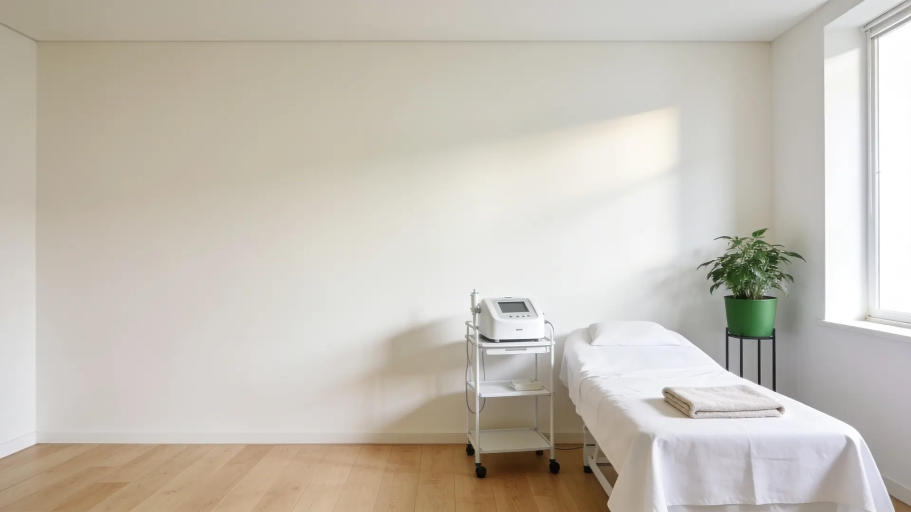
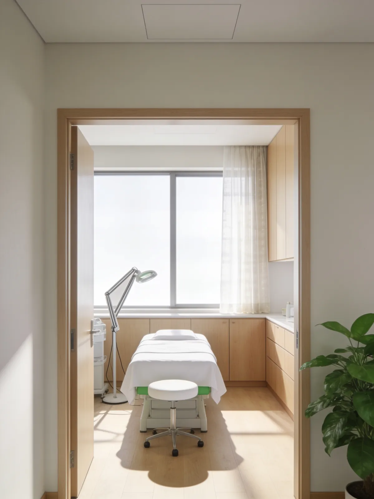
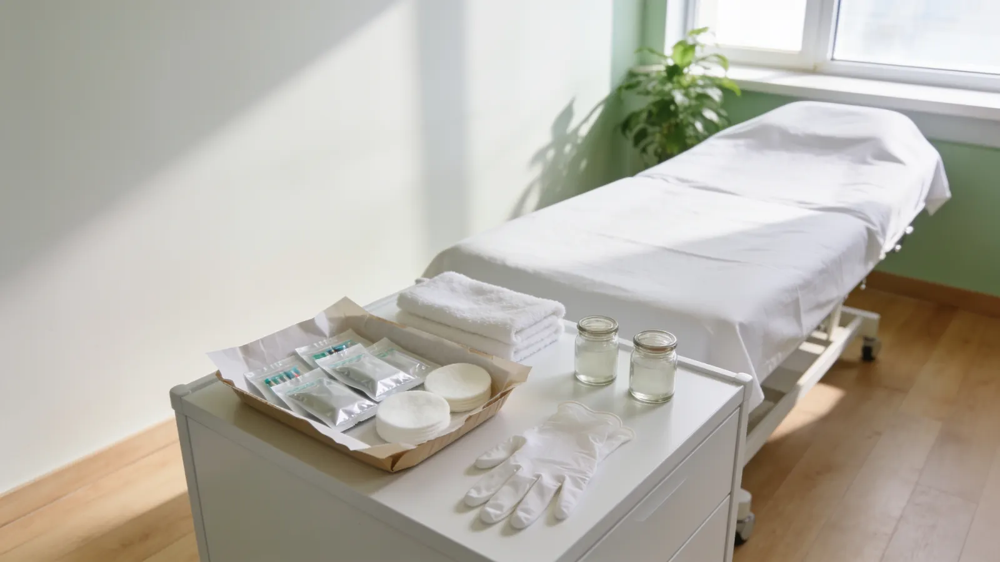
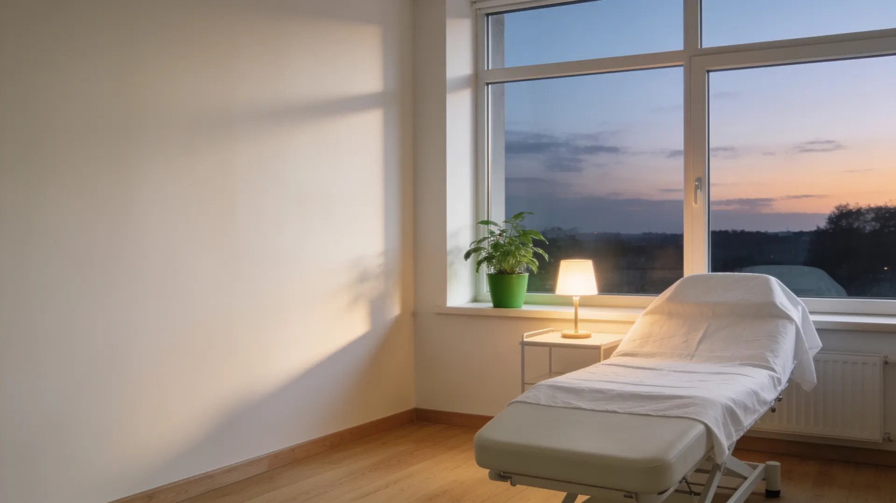

«Я у многих была косметологов по городу, но желаемый и обещанный результат я увидела именно в клинике Коробейниковой!» – Оксана С., отзыв на Яндекс Картах


Клиника косметологии доктора Коробейниковой
Косметология в Ростове-на-Дону: сначала консультация врача
Врач осматривает кожу, предлагает план процедур и называет цену до начала. Решение – за вами.
- Косметолог с опытом более 25 лет
- Аппаратная, инъекционная и лазерная
- Консультация косметолога – 1500 ₽
- Ежедневно 10:00–20:00, есть парковка
Четыре вопроса, которые задают до процедуры
Отвечаем на них здесь, пока вы дома, а не когда вы уже на кушетке.
- 1С чего начать?
- 2Кто будет принимать?
- 3Что пишут пациенты?
- 4Когда можно прийти?
Услуги
Врачебная косметология: от чистки до SMAS-лифтинга
Лицо, тело и волосы в одной клинике. Какие процедуры нужны именно вам и сколько они стоят, врач скажет на консультации – до начала.
Консультация косметолога
Осмотр кожи, разговор о том, что беспокоит, план процедур. С неё начинается любая программа.
1500 ₽Инъекционная косметология
Биоревитализация, мезотерапия, контурная пластика, увеличение губ, ботулинотерапия.
Аппаратная косметология
SMAS-лифтинг, RF-лифтинг, фотоомоложение, микротоки, Indiba, LPG.
Лазерная косметология
Лазерное омоложение, фракционная шлифовка, удаление татуировок, перманента и сосудистой сетки.
Чистка и уход за лицом
Очищение кожи, пилинги, в том числе карбоновый, лечение акне, массаж лица.
Удаление новообразований
Папилломы, бородавки, сосудистые дефекты, рубцы – после осмотра врача.
Тело и коррекция веса
Коррекция фигуры, LPG, карбокситерапия, инъекционный липолиз.
Трихология
Кожа головы и волосы: осмотр и план ухода.
Не знаете, что именно нужно? Начните с консультации: врач посмотрит, объяснит и предложит план с ценой по каждой процедуре.
Позвонить
Вопрос 1 · С чего начать?
Первый визит – консультация, а не процедура
Пять шагов, и после каждого вы понимаете, что происходит. Консультация косметолога – 1500 ₽.
Шаг 1Разговор
Что беспокоит и какого результата вы хотите. Что уже пробовали и как кожа на это реагировала.
Шаг 2Осмотр
Врач смотрит кожу и объясняет, что видит, простыми словами.
Шаг 3План
Какие процедуры, в каком порядке и сколько сеансов понадобится.
Шаг 4Цена
По каждой процедуре плана – до начала, а не после.
Шаг 5Решение
Можно начать в другой день, можно подумать дома. Давить не будем.
Позвонить
Позвоните и расскажите, что беспокоит: подберём время консультации.

Вопрос 2 · Кто будет принимать?
Клиника врача, а не салон
Клинику ведёт косметолог с опытом более 25 лет. Направления – эстетическая, лазерная, медицинская и аппаратная косметология, трихология, коррекция веса.
Вопрос 3 · Что пишут пациенты?
Что пишут на Яндекс Картах
-
«Прошла процедуру SMAS-лифтинга в клинике Аллы Георгиевны. Очень переживала, но результат меня поразил! Лицо заметно подтянулось, контуры стали более чёткими. Врачи в клинике очень профессиональные, всё подробно объяснили, даже после процедуры были на связи, чтобы следить за восстановлением. Однозначно рекомендую!»
-
«К моей уважаемой Алле я попала однажды по рекомендации! И не пожалела. Я у многих была косметологов по городу, но желаемый и обещанный результат я увидела именно в клинике Коробейниковой! Я делала процедуры биоревитализации и не только, больше всего мне понравился препарат "Микроколлост" и особенно ботулотоксин, встал как надо, чему я особенно очень-очень рада!»
-
«Клиника понравилась . Были с ребенком , удаляли пяточную бородавку. В клинике всё в порядке : на звонки ресепшен отвечает сразу , всегда приветливы . На приёме были у доктора Ильиной , остались довольны. Также я сама обращалась к Александре по поводу пигментных пятен на лице . Клинику рекомендую!»
Отзывы скопированы с карточки на Яндекс Картах без правок.

Вопрос 4 · Когда можно прийти?
Запишитесь на консультацию
Позвоните: подберём время и ответим на вопросы до визита. Можно написать ВКонтакте.